Abstract & Research Objectives
Although Low-Power Wide-Area Networks (LPWANs) based on Long-Range (LoRa) Chirp Spread Spectrum (CSS) modulation promise multi-kilometer connectivity, real-world urban and campus deployments suffer severe blockage attenuation that pushes signals into the ultra-low SNR regime (below Semtech's nominal $-7.5\text{ dB}$ limit for SF7). Recent deep-learning receivers—such as CALoRa for preamble detection and NELoRa, GLoRiPHY, and LoRaSeek for symbol decoding—demonstrate substantial sensitivity gains in isolated stages, yet end-to-end physical-layer performance under realistic hardware impairments remains largely unexplored.
In this thesis, we model and benchmark the complete three-stage sequential LoRa gateway receiver pipeline (Preamble Detection $\to$ Synchronization $\to$ Symbol Decoding) across $-25\text{ dB}$ to $-10\text{ dB}$ under realistic $\pm 5\text{ ppm}$ Carrier Frequency Offset (CFO) and fractional Symbol Timing Offset ($\text{STO} \in [0, T_s/2]$). While replacing conventional preamble detection with CALoRa yields a $+1.0\text{ dB}$ end-to-end gain under clean AWGN, that sensitivity advantage vanishes completely once CFO and STO are introduced: at $-18\text{ dB}$, CALoRa detects 82% of packets, but conventional analytical up–down chirp FFT synchronization passes only 42% for CFO and 44% for STO, collapsing symbol decoding accuracy to 53%.
To overcome this Stage 2 bottleneck, we validate a "Denoise-then-Sync" proof-of-work using STFT spectrogram denoising prior to analytical up–down chirp estimation (handling $2.25$ SFD down-chirps via complex conjugation). At $-19\text{ dB}$, pre-synchronization denoising recovers buried FFT peaks with a +26.1 dB peak-to-median gain ($1.48\times \to 29.8\times$). At $-18\text{ dB}$, it boosts STO accuracy from 61% to 89% ($+28\%$) and CFO accuracy from 58% to 87% ($+29\%$), delivering an immediate +2.0 dB end-to-end compensated payload decoding improvement ($90\%$ threshold shifting from $-15.5\text{ dB}$ to $-17.5\text{ dB}$; accuracy rising from $63\%$ to $83\%$ at $-18\text{ dB}$). Finally, we propose a dedicated Dual-Slope Denoise-then-Sync Network trained natively on unaligned preamble up-chirps and SFD down-chirps to unlock practical ultra-low SNR LoRa reception.
Meskipun teknologi LoRa (Long-Range) menjanjikan jangkauan komunikasi multi-kilometer, implementasi di lingkungan perkotaan dan kampus mengalami redaman bangunan yang menjatuhkan Signal-to-Noise Ratio (SNR) ke zona ultra-low SNR (di bawah batas $-7.5\text{ dB}$ untuk SF7). Berbagai model AI terbaru telah meningkatkan deteksi preamble (CALoRa) dan dekoding simbol (GLoRiPHY, LoRaSeek), tetapi belum dievaluasi pada pipeline penerima tiga tahap secara utuh di bawah offset perangkat keras nyata.
Tesis ini membuktikan bahwa di bawah gangguan CFO ($\pm 5\text{ ppm}$) dan fractional STO ($\tau \in [0, T_s/2]$), keuntungan deteksi AI pada tahap 1 hilang sepenuhnya: pada SNR $-18\text{ dB}$, CALoRa mendeteksi 82% paket, namun sinkronisasi FFT konvensional hanya meloloskan 42% CFO dan 44% STO sehingga akurasi dekoding jatuh ke 53%. Dengan pendekatan Denoise-then-Sync (denoising spektrogram STFT sebelum sinkronisasi up–down chirp), puncak FFT yang tenggelam pada $-19\text{ dB}$ pulih sebesar +26.1 dB, akurasi STO/CFO meningkat +28–29% pada $-18\text{ dB}$, dan dekoding payload end-to-end meningkat sebesar +2.0 dB ($-15.5\text{ dB} \to -17.5\text{ dB}$).
LoRa(Long-Range) 기반 LPWAN은 장거리 저전력 IoT 통신에 널리 활용되지만, 도심 및 캠퍼스 환경에서는 장애물 감쇄로 인해 신호가 SF7 기준 복조 한계($-7.5\text{ dB}$) 이하인 초저(Ultra-Low) SNR 영역으로 급격히 저하됩니다. 최근 프리앰블 검출(CALoRa)과 심볼 복조(GLoRiPHY, LoRaSeek)에 딥러닝이 도입되었으나, 실제 하드웨어 오프셋(CFO, STO) 환경에서 3단계 전체 수신기 파이프라인을 통합 검증한 연구는 부족합니다.
본 연구는 $\pm 5\text{ ppm}$ CFO 및 분수 심볼 타이밍 오프셋($\text{STO} \in [0, T_s/2]$) 환경의 종단간 벤치마크를 통해, $-18\text{ dB}$에서 CALoRa가 82%의 패킷을 검출하더라도 기존 FFT 기반 2단계 동기화가 CFO 42%, STO 44%만 통과시켜 전체 성능 이득이 소멸함을 규명하였습니다. 이를 해결하기 위한 Denoise-then-Sync 사전 검증에서 STFT 스펙트로그램 디노이징을 동기화 전에 적용한 결과, $-19\text{ dB}$에서 피크 대 중앙값 비율이 +26.1 dB 향상되었고, $-18\text{ dB}$에서 STO(61%→89%) 및 CFO(58%→87%) 정확도가 +28~29%p 개선되었으며, 종단간 페이로드 복조 임계값이 +2.0 dB($-15.5\text{ dB} \to -17.5\text{ dB}$) 향상됨을 입증하였습니다.
Because LoRa receivers operate as a strict sequential cascade, deploying deep learning in Stage 1 (Preamble Detection) and Stage 3 (Symbol Decoding) yields no practical benefit if Stage 2 (Synchronization) fails under ultra-low SNR.
- Objective 1: Adapt and integrate machine learning spectrogram restoration into LoRa synchronization to decouple CFO and STO under ultra-low SNR.
- Objective 2: Evaluate end-to-end Symbol Decoding Accuracy (SDA) and synchronization recovery improvements against conventional analytical receivers.
Problem Statement, LoRa Fundamentals & Synchronization Failure
Low-Power Wide-Area Networks (LPWANs) enable long-range telemetry across precision agriculture [1], [2], maritime monitoring, and smart cities [3], [4]. In 2024, Semtech [5], [6] reported that LoRa accounts for 30% of global LPWAN deployments with 6.9 million gateways and 350 million end nodes. Yet field studies [7], [8] confirm that blockage attenuation in urban and campus settings degrades SNR well below theoretical link budgets.
| Parameter | LoRa / LoRaWAN | Bluetooth (BLE) | Cellular (4G / 5G / NB-IoT) |
|---|---|---|---|
| Range | Long (2 to 15 km) | Short (10 to 100 m) | Long (0.8 to 16 km) |
| Data Speed | Very low (0.3 to 50 kbps) | Medium (1 to 2 Mbps) | High (Mbps to Gbps) |
| Power Consumption | Ultra-low (5–10 years battery) | Very low | High |
| Primary Use Cases | Off-grid, wide-area sensors | Phone-to-device, wearables | Streaming, high-data tracking |
| Frequency Band | 433 MHz, 868 MHz, 915 MHz (ISM) | 2.4 GHz | 600–900 MHz, 1.7–3.7 GHz, 24–39 GHz |
LoRaWAN Architecture, C-RAN & Frame Structure
In standard LoRaWAN star-of-stars deployments (Figure 1), battery-powered Edge Devices broadcast low duty-cycle packets, multi-channel Gateways listen continuously and forward packets concurrently, and the cloud Network Server handles deduplication and voting. In C-RAN extensions [7], [9], distributed gateways forward raw or compressed I/Q samples so centralized servers can coherently combine signals and run complex deep-learning receivers.
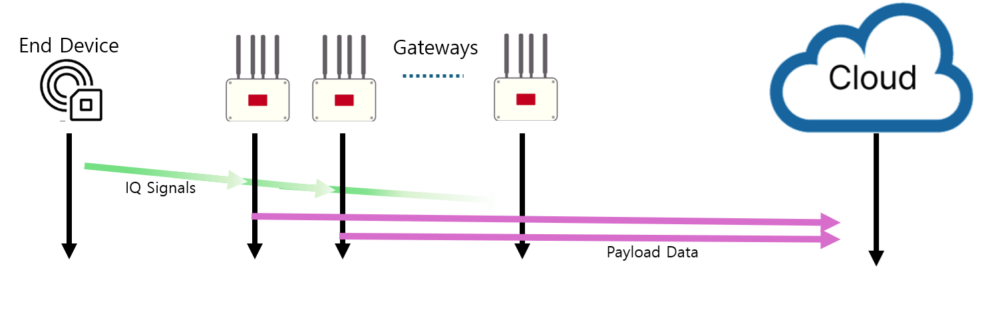
ZoomFigure 1. Data flow diagram of I/Q signals and payload data across End Devices, Gateways, and Network Server.
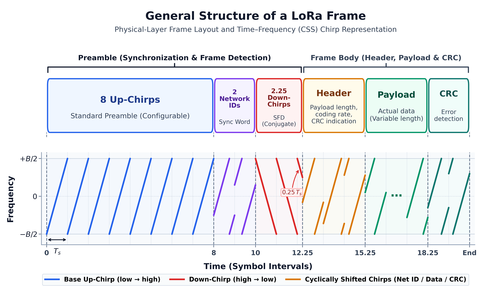
ZoomFigure 2. General structure of a LoRa frame: 8 preamble up-chirps, 2 network IDs, 2.25 conjugate SFD down-chirps, Header, Payload, and CRC.
Ultra-Low SNR Regime & Three-Stage Receiver Pipeline
| Spreading Factor (SF) | Semtech SNR Limit (dB) | Time on Air (ms) | Typical Range (km) | Ultra-Low SNR Failure Zone |
|---|---|---|---|---|
| SF 7 | −7.5 | 61 | 2 | < −7.5 dB |
| SF 8 | −10.0 | 103 | 4 | < −10.0 dB |
| SF 9 | −12.5 | 185 | 6 | < −12.5 dB |
| SF 10 | −15.0 | 371 | 8 | < −15.0 dB |
| SF 11 | −17.5 | 741 | 10 | < −17.5 dB |
| SF 12 | −20.0 | 1483 | 12 | < −20.0 dB |
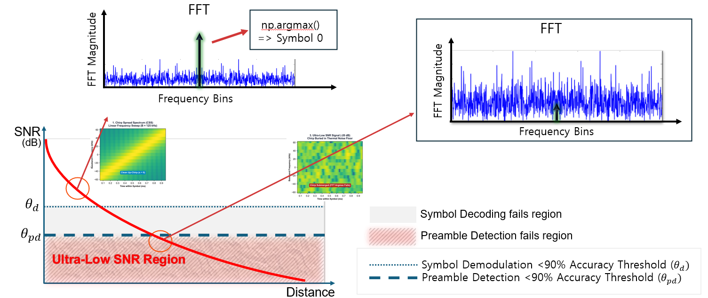
ZoomFigure 3. Definition of the ultra-low SNR region below the 90% symbol demodulation ($\theta_d$) and preamble detection ($\theta_{pd}$) thresholds.
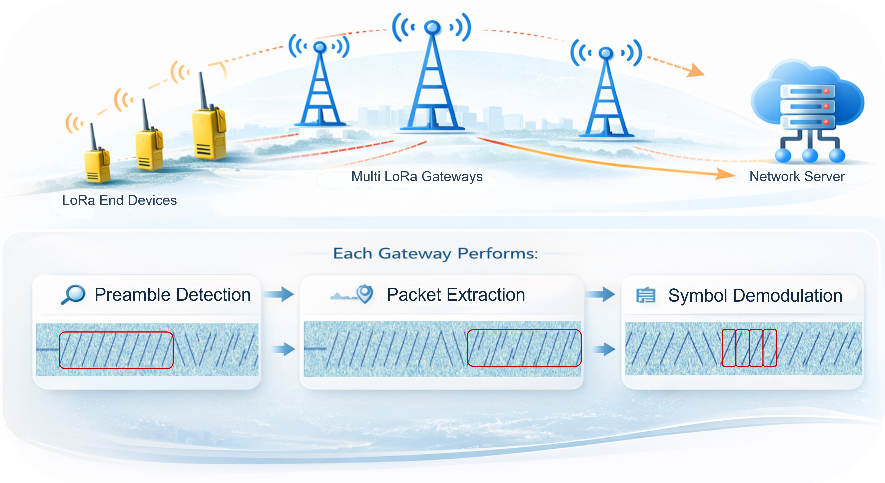
ZoomFigure 4. Sequential gateway receiver pipeline: Stage 1 (Preamble Detection), Stage 2 (Synchronization), and Stage 3 (Symbol Decoding).
Hardware Offsets & Conventional Stage 2 Synchronization Failure
Symbol Timing Offset
Asynchronous arrival misaligns the receiver's FFT window ($\Delta k_{\text{STO}}$), shifting dechirped FFT bin indices and corrupting downstream payload symbols.
Carrier Frequency Offset
Crystal mismatch ($5\text{ ppm}$ at $915\text{ MHz} = 4{,}575\text{ Hz}$) introduces continuous phase rotation; any residual error $> \pm 488.3\text{ Hz}$ (half bin at SF7) causes wrong symbol bins.
Sampling Frequency Offset
ADC clock mismatch near $1\text{ MHz}$ produces cumulative phase drift that is negligible during short preambles but accumulates across longer payload frames.
A single up-chirp cannot distinguish CFO from STO. Bernier et al. [13] decouple them by combining preamble up-chirp peak $k_{\text{up}}$ and SFD down-chirp peak $k_{\text{down}}$: CFO shifts both in the same direction ($k_{\text{up}} = k_{\text{CFO}} + k_{\text{STO}}$), whereas STO shifts them in opposite directions ($k_{\text{down}} = k_{\text{CFO}} - k_{\text{STO}}$):
Because both estimators depend directly on raw dechirped FFT argmax peak picking, random AWGN spikes in the ultra-low SNR regime corrupt $k_{\text{up}}$ and $k_{\text{down}}$—especially across the short $2.25$ SFD down-chirps—causing complete Stage 2 breakdown.
Interactive Ultra-Low SNR & Denoise-then-Sync Lab
Explore the exact physical mechanism behind our thesis at −19 dB: turn off the Pre-Sync STFT Denoiser to see random AWGN spikes cause a false argmax lock at bin 101, then enable the Denoiser to observe true peak recovery at bin 42.
Research Methodology & Proposed Synchronization Architecture
Unlike prior studies that evaluate preamble detection or symbol decoding in isolation, our Python-based modular simulation framework evaluates the complete three-stage sequential LoRa gateway receiver directly on unaligned, offset-impaired I/Q streams.
Baseband Packet
2 pure-noise frames + 8 preamble up-chirps + 2 Sync Words + 2.25 SFD down-chirps + 10 random SF7 payload symbols.
Channel Impairments
$1\text{ MHz}$ stream injected with Gaussian CFO ($\pm 5\text{ ppm}$), fractional STO ($\tau \in [0, T_s/2]$), and AWGN ($-25$ to $-10\text{ dB}$).
Sequential 3-Stage
Stage 1 coarse detection $\to$ Stage 2 CFO/STO estimation & derotation $\to$ Stage 3 payload decoding.
Monte Carlo Metrics
Logs Preamble Detection Rate, CFO ($\le 488.3\text{ Hz}$) & STO Success Rates, End-to-End SDA, PMR, and latency.
| Parameter | Value |
|---|---|
| Bandwidth ($B$) | $125\text{ kHz}$ |
| Spreading Factor ($\text{SF}$) | $7$ ($N = 128$ bins) |
| Sampling Frequency ($f_s$) | $1\text{ MHz}$ ($O_s = 8\times$) |
| Symbol Duration ($T_s$) | $2^{\text{SF}}/B \approx 1.024\text{ ms}$ |
| Preamble & SFD | $8$ up-chirps, $2.25$ down-chirps |
| Payload Length | $10$ symbols / packet |
| CFO Impairment | $\pm 5\text{ ppm}$ (Gaussian Normal) |
| STO Impairment | Fractional delay $\in [0, T_s/2]$ |
| Evaluated SNR Range | $-25\text{ dB}$ to $-10\text{ dB}$ ($1\text{ dB}$ step) |
| Config | Stage 1 | Stage 2 | Stage 3 |
|---|---|---|---|
| Conv-Baseline | Conventional Repeated-Symbol | Analytical Up–Down FFT [13] | Dechirp FFT / LoRaSeek |
| AI-End2End (Conv-Sync) | CALoRa [18] | Analytical Up–Down FFT [13] | LoRaSeek [17] |
| PoW Denoise-then-Sync | Coarse Trigger / CALoRa | Pre-Sync STFT Denoiser (LoRaSeek / GLoRiPHY + Conj. SFD) + Analytical Sync | LoRaSeek [17] |
Proposed Stage 2 Dual-Slope Denoise-then-Sync Architecture
Off-the-shelf payload denoisers like LoRaSeek [17] cannot be dropped directly into Stage 2 without adaptation because of a fundamental domain mismatch: LoRaSeek was trained exclusively on aligned single payload up-chirps ($\text{CFO} = 0$, $\text{STO} = 0$), whereas Stage 2 must process unaligned fractional-STO windows containing both $8$ preamble up-chirps and $2.25$ opposite-slope SFD down-chirps. (In our proof-of-work, SFD down-chirps are mapped into the up-chirp domain via complex conjugation before denoising.) To eliminate boundary mismatch permanently, our proposed final thesis module bridges CALoRa (Stage 1) and LoRaSeek (Stage 3) with three submodules (Figure 5):
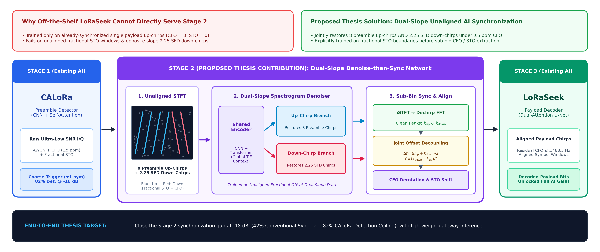
ZoomFigure 5. Proposed end-to-end learning-based LoRa receiver architecture featuring the Stage 2 Dual-Slope Denoise-then-Sync Network bridging Stage 1 preamble detection (CALoRa) and Stage 3 payload decoding (LoRaSeek).
Experimental Results & Quantitative Evaluation
Select a result group below to inspect each experimental milestone, or click View All Results (Figs. 6–19) to view the entire Chapter IV evaluation at once. Click any figure to zoom in via the high-resolution Lightbox.
4.1. Baseline Symbol Demodulator Benchmark ($N = 1{,}000$ SF7 Symbols @ $-18\text{ dB}$)
Among conventional DSP methods, Naive 1/8 Decimation FFT (subsampling $1\text{ MHz} \to 125\text{ kHz}$ directly before dechirping) collapses to 14.3% accuracy due to wideband noise aliasing. Polyphase Downsampling reaches 99.2% in $37.7\text{ ms}$, but only because its Nyquist FIR low-pass filter strips $87.5\%$ ($+9.03\text{ dB}$) of out-of-band noise under idealized zero-CFO/STO sync (effectively comparable to SF10), making it an excluded theoretical reference rather than a fair SF7 baseline. Among AI models, STFT denoiser architectures—GLoRiPHY (95.2%, 5.23 s) and LoRaSeek (93.2%, 4.12 s)—outperform NELoRa (79.0%, 22.24 s) by $+14.2\%\text{--}16.2\%$ while running $4.2\times\text{--}5.4\times$ faster. LoRaSeek's speed and accuracy make it our primary Stage 3 decoder.
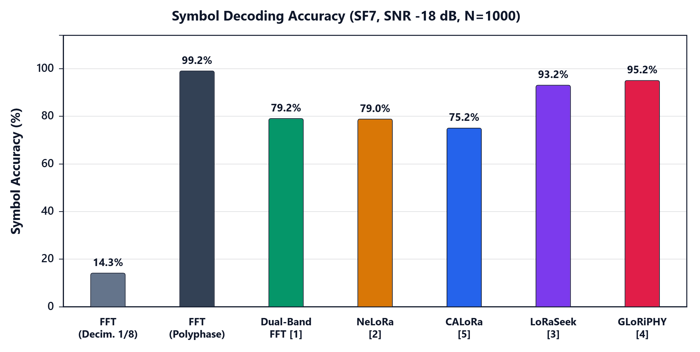
ZoomFigure 6. Symbol decoding accuracy across conventional DSP and deep-learning demodulators for synchronized SF7 symbols at −18 dB SNR.
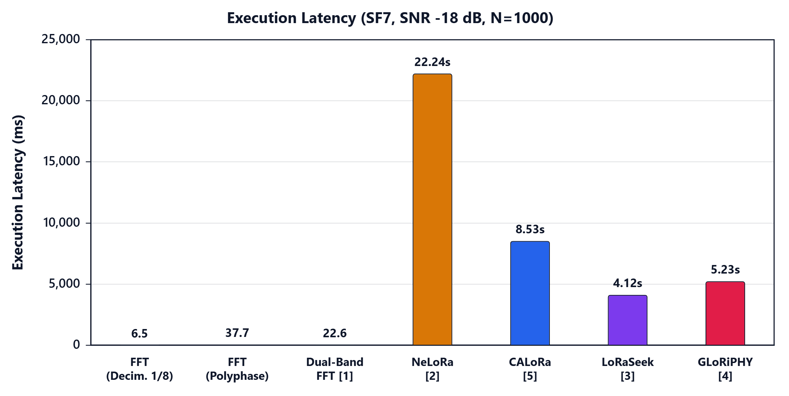
ZoomFigure 7. Execution latency comparison across conventional DSP (ms) and deep-learning (s) symbol demodulators for $1{,}000$ symbols.
4.2. End-to-End Pipeline Evaluation: Clean AWGN vs. Realistic CFO & STO
Experiment A — Clean AWGN Without Offsets ($\Delta f = 0, \tau = 0$): Pairing CALoRa with LoRaSeek shifts the 90% preamble detection threshold from $-17.5\text{ dB}$ to $-19.1\text{ dB}$ (Figure 8) and improves end-to-end Symbol Decoding Accuracy (SDA) by +1.0 dB at the 90% threshold ($-17.3\text{ dB} \to -18.3\text{ dB}$, Figure 9).
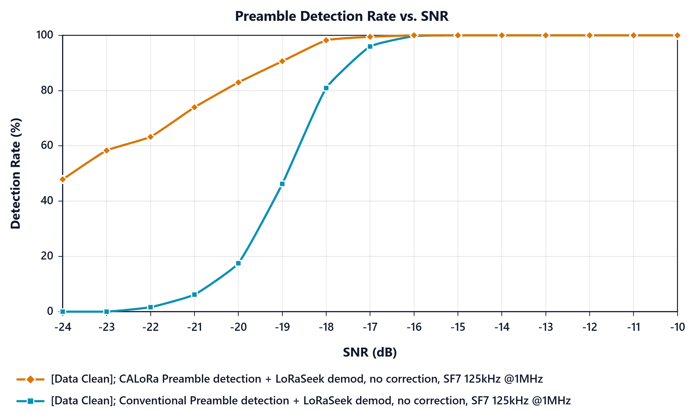
ZoomFigure 8. Preamble detection rate vs. SNR under clean AWGN, comparing conventional detection and CALoRa.
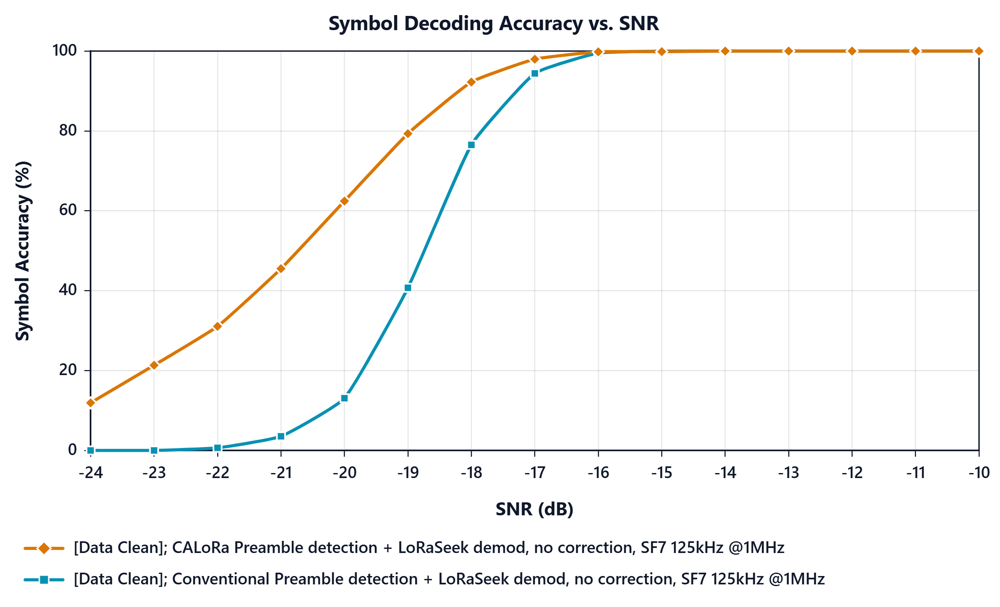
ZoomFigure 9. End-to-end symbol decoding accuracy vs. SNR under clean AWGN without hardware offsets (+1.0 dB gain).
Experiment B — Realistic Channel ($\pm 5\text{ ppm}$ CFO & Fractional STO): Even with offsets present, CALoRa still detects 82% of packets at $-18\text{ dB}$ (vs. $46\%$ conventional, Figure 10), yet the downstream SDA gain vanishes completely—collapsing to 53% at $-18\text{ dB}$ with a $90\%$ threshold near $-15.5\text{ dB}$ (Figure 11). Inspecting Stage 2 reveals the exact culprit: at $-18\text{ dB}$, only 42% of packets pass CFO estimation (Figure 12) and 44% pass STO estimation (Figure 13).
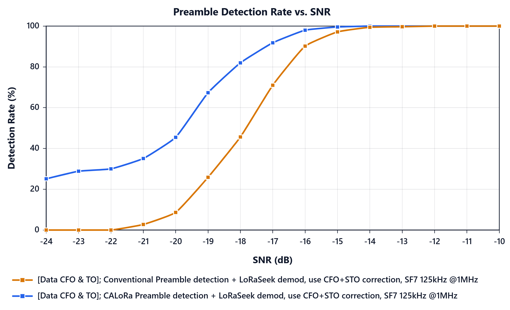
ZoomFigure 10. Stage 1 preamble detection rate vs. SNR under $\pm 5\text{ ppm}$ CFO and fractional STO (CALoRa maintains 82% @ −18 dB).
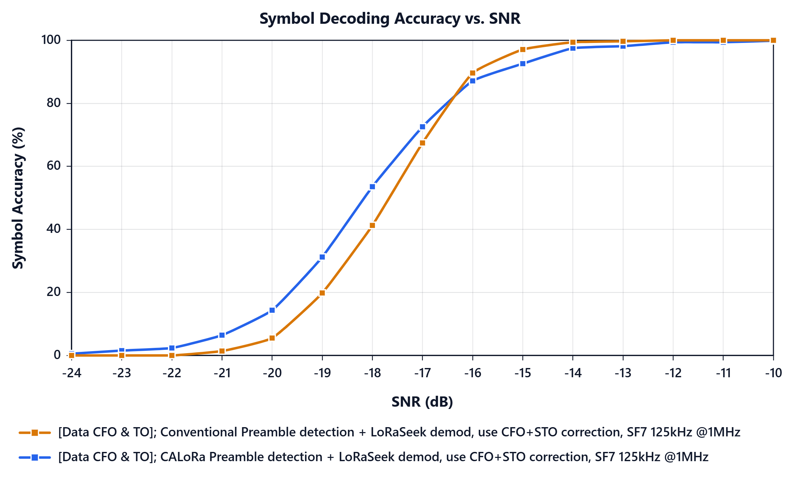
ZoomFigure 11. End-to-end SDA under CFO and STO: the 1–2 dB sensitivity gain disappears despite strong Stage 1 detection.
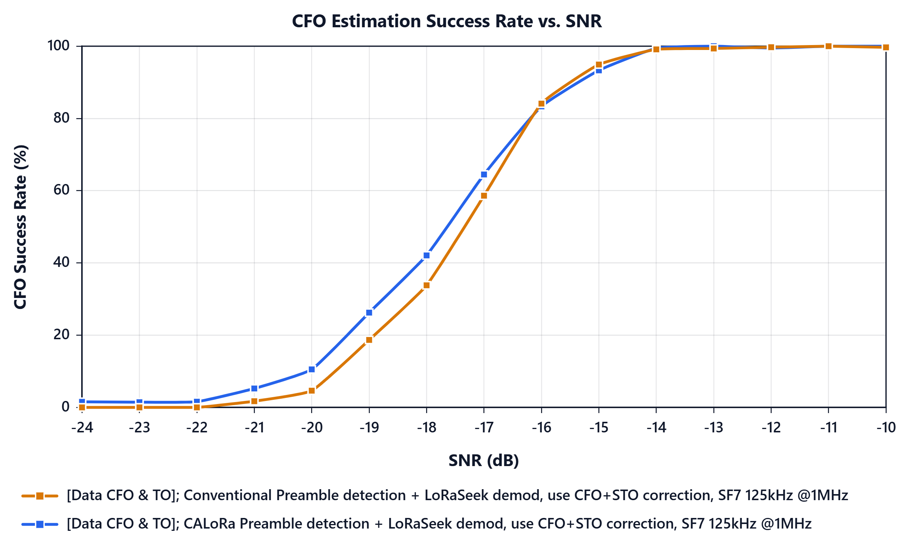
ZoomFigure 12. Stage 2 CFO estimation success rate ($\le \pm 488.3\text{ Hz}$), collapsing to 42% at −18 dB regardless of preamble detector.
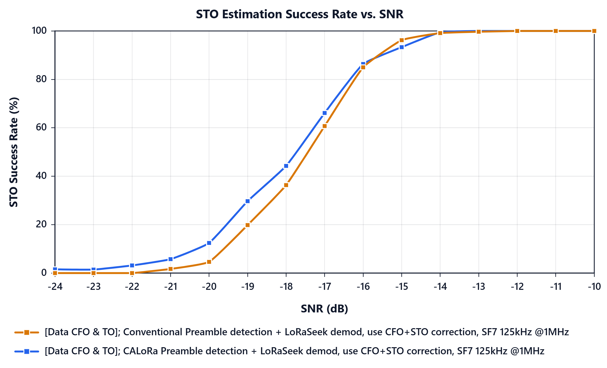
ZoomFigure 13. Stage 2 STO estimation success rate under realistic hardware impairments (44% @ −18 dB).
4.3. Proof-of-Work (1/2): FFT Peak Breakdown & Recovery via Spectrogram Denoising
At $+10\text{ dB}$ (Figure 14), dechirped preamble up-chirp ($k_{\text{up}}$, bin 30) and SFD down-chirp ($k_{\text{down}}$, bin 74) FFT peaks are razor-sharp. At $-19\text{ dB}$ (Figure 15), the true chirp peak at bin 42 is submerged beneath AWGN spikes ($\text{PMR} = 1.48\times$), causing argmax to falsely lock onto bin 101. Passing that identical $-19\text{ dB}$ signal through the LoRaSeek STFT denoiser and inverse STFT before dechirping (Figure 16) suppresses background noise and restores the exact ground-truth peak at bin 42 with a $29.8\times$ PMR (+26.1 dB peak-to-noise gain).
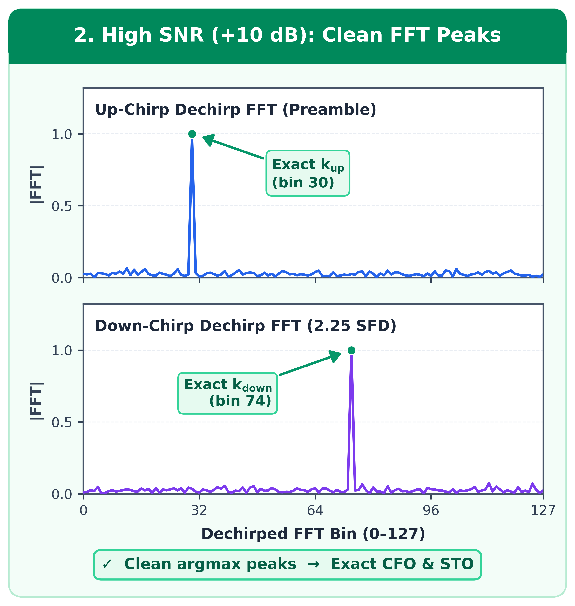
ZoomFigure 14. Clean preamble up-chirp ($k_{\text{up}}$) and SFD down-chirp ($k_{\text{down}}$) FFT peaks at $+10\text{ dB}$.
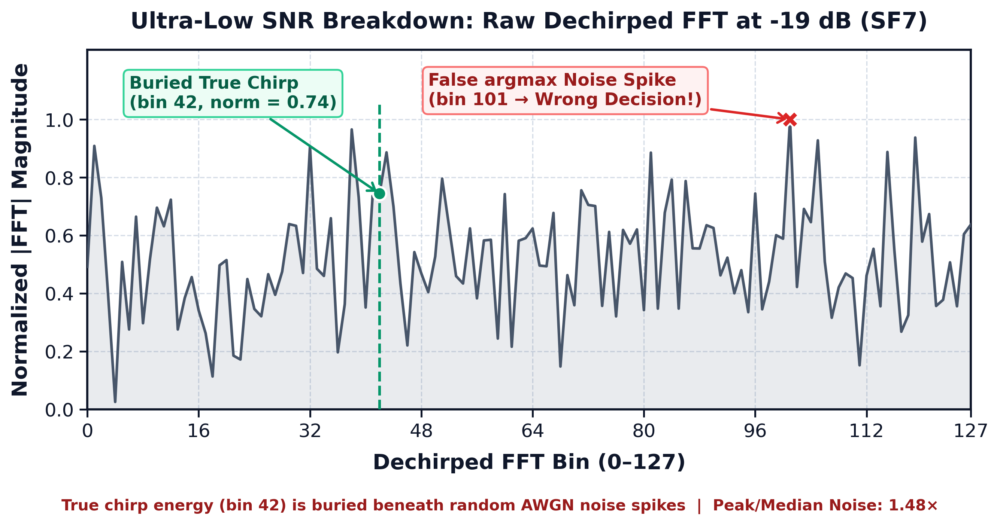
ZoomFigure 15. Ultra-low SNR breakdown at $-19\text{ dB}$ ($\text{PMR} = 1.48\times$): noise spikes cause false lock at bin 101 instead of bin 42.
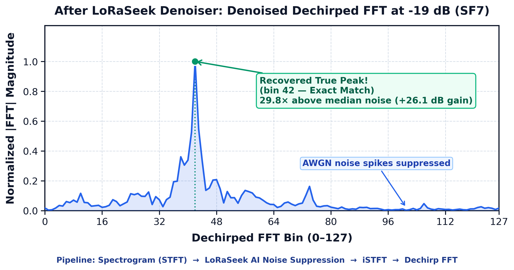
ZoomFigure 16. Denoised FFT at $-19\text{ dB}$ after LoRaSeek STFT noise suppression: true peak at bin 42 recovered ($\text{PMR} = 29.8\times$, $+26.1\text{ dB}$).
4.4. Proof-of-Work (2/2): Stage 2 Sync Recovery & +2.0 dB End-to-End Payload Gain
Evaluating Denoise-then-Sync across $-25\text{ dB}$ to $-10\text{ dB}$ confirms dramatic Stage 2 recovery: at $-18\text{ dB}$, CFO accuracy jumps from 58% to 83% (GLoRiPHY) and 87% (LoRaSeek, +29%) (Figure 17), while STO accuracy increases from 61% to 89% (+28%), shifting the 90% threshold by $2.1\text{ dB}$ (Figure 18). Compensating incoming frames with these denoised estimates boosts downstream payload decoding (Figure 19) by +2.0 dB at the 90% threshold ($-15.5\text{ dB} \to -17.5\text{ dB}$) and raises decoding accuracy at $-18\text{ dB}$ from 63% to 83% (+20%).
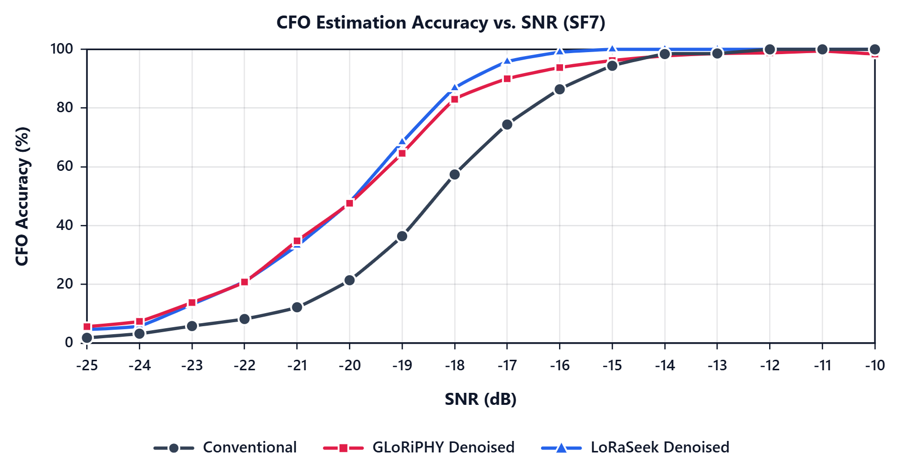
ZoomFigure 17. CFO estimation accuracy across $-25$ to $-10\text{ dB}$: LoRaSeek front-end raises $-18\text{ dB}$ accuracy from $58\%$ to $87\%$ ($+29\%$).
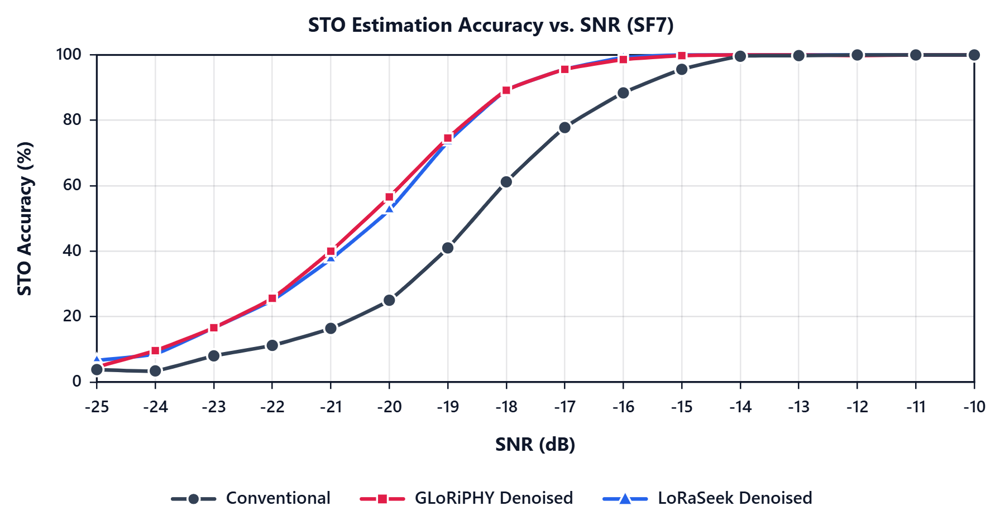
ZoomFigure 18. STO estimation accuracy across $-25$ to $-10\text{ dB}$: pre-sync denoising lifts $-18\text{ dB}$ accuracy from $61\%$ to $89\%$ ($+28\%$).
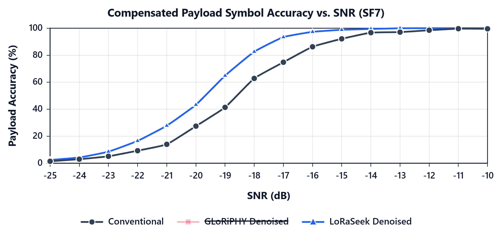
ZoomFigure 19. End-to-end compensated payload decoding accuracy: 90% threshold improves from $-15.5\text{ dB}$ to $-17.5\text{ dB}$ ($+2.0\text{ dB}$).
| Pipeline / Method | Stage 1 Det. @ −18 dB | Stage 2 STO @ −18 dB | Stage 2 CFO @ −18 dB | Payload SDA @ −18 dB | 90% Decoding Threshold |
|---|---|---|---|---|---|
| Conv-Baseline (With CFO/STO) | 46% | 61% (Isolated) | 58% (Isolated) | 53%–63% | −15.5 dB |
| AI-End2End (Conv-Sync) | 82% | 44% (E2E) | 42% (E2E) | 53% (E2E) | −15.5 dB *(Gain Collapsed)* |
| PoW Denoise-then-Sync (LoRaSeek) | 82% (Coarse) | 89% (+28%) | 87% (+29%) | 83% (+20%) | −17.5 dB (+2.0 dB Gain) |
State-of-the-Art Literature Comparison
Comparing deep-learning and signal-processing works across the three receiver stages and C-RAN deployments.
Replaces FFT peak counting with CNN + Chirp-Aware Self-Attention across 20-frame windows, achieving 90% SF7 preamble detection down to $-21.7\text{ dB}$ even under CFO.
Analytical up–down chirp FFT peak picking decouples CFO and STO efficiently at moderate SNR, but relies on raw argmax peaks that fail below $-15.5\text{ dB}$.
Pioneered STFT spectrogram masking + hybrid neural symbol classification, reporting $1.84\text{--}2.35\text{ dB}$ SNR gains ($79.0\%$ accuracy, $22.24\text{ s}$ latency in our SF7 $-18\text{ dB}$ test).
Suppress noise in STFT using Conformer (GLoRiPHY: $95.2\%$, $5.23\text{ s}$) or Dual-Attention U-Net (LoRaSeek: $93.2\%$, $4.12\text{ s}$) before iSTFT and standard dechirping.
Forwards raw/compressed I/Q streams from distributed gateways to cloud servers for coherent combining and GPU-based synchronization/decoding.
Diagnoses Stage 2 as the $42\%$ vs. $82\%$ bottleneck under realistic CFO/STO, proves $+26.1\text{ dB}$ peak rescue and $+2.0\text{ dB}$ payload gain via Denoise-then-Sync, and proposes a native unaligned Dual-Slope Sync Network.
Conclusion & Future Research Roadmap
Bridging Stage 1 preamble detection and Stage 3 symbol decoding with learning-assisted Stage 2 synchronization unlocks practical ultra-low SNR LoRa reception under realistic hardware offsets. Table 6 summarizes remaining engineering limitations and the roadmap toward final thesis completion.
| Focus Area | Current Limitation | Planned Future Work | Target Outcome |
|---|---|---|---|
| Dedicated Dual-Slope Sync Model | Proof-of-work reuses off-the-shelf LoRaSeek (trained on aligned single up-chirps) via SFD conjugation, leaving fractional-STO boundary mismatch. | Train the proposed Dual-Slope Unaligned Synchronization Network natively on unaligned preamble up-chirps and $2.25$ SFD down-chirps under fractional STO, CFO, and AWGN. | Eliminate domain mismatch and boost sub-bin CFO/STO accuracy below $-18\text{ dB}$. |
| Inference Latency & Edge Efficiency | STFT neural denoising requires $4.12\text{--}5.23\text{ s}$ per $1{,}000$ symbols, exceeding real-time embedded gateway budgets. | Apply lightweight attention blocks, structured pruning, and INT8 quantization tailored for gateway deployment. | Real-time, low-latency synchronization on commercial LoRaWAN gateways. |
| Multi-SF, SFO & Real SDR Testing | Current evaluation focuses on synthetic SF7 AWGN + CFO/STO channels without cumulative SFO or multipath fading. | Extend evaluation across $\text{SF}7\text{--}\text{SF}12$, Sampling Frequency Offset (SFO), multipath fading, and real over-the-air SDR traces. | Verify robustness and field readiness across diverse urban/campus deployments. |
Thesis Resources, Code & Related Links
Direct access to thesis documentation, simulation source code, testing benchmarks, and affiliated laboratory links.
Thesis Manuscript & WCL Paper
Full Master's thesis draft (Ch. I–V) and submitted IEEE Wireless Communications Letters benchmark manuscript.
Simulation & Denoise-then-Sync
Python 3-stage pipeline simulator, CFO/STO impairment injector, and SOTA evaluation scripts.
Testing Dataset & Traces
SF7 ($B=125\text{ kHz}$, $f_s=1\text{ MHz}$) Monte Carlo test sets across $-25\text{ dB}$ to $-10\text{ dB}$ with $\pm 5\text{ ppm}$ CFO & STO.
PNU Affiliated Sites
Pusan National University, Dept. of Information Convergence Engineering, and Semtech / LoRa Alliance specs.
References [1–18]
Complete IEEE-formatted references matching Master_AI Convergence_Sean_v4.hwp.
- [1]Y. Ren, G. Li, Y. Liu, Y. Dong, and Z. Cao, "Aeroecho: Towards agricultural low-power wide-area backscatter with aerial excitation source," in Proc. IEEE INFOCOM, 2025.
- [2]Y. Ren, A. Gamage, L. Liu, M. Li, S. Chen, Y. Dong, and Z. Cao, "Sateriot: High-performance ground-space networking for rural IoT," in Proc. ACM MobiCom, 2024.
- [3]Y. Ren, L. Liu, C. Li, Z. Cao, and S. Chen, "Is LoRaWAN really wide? Fine-grained LoRa link-level measurement in an urban environment," in Proc. IEEE ICNP, 2022.
- [4]L. E. Márquez, A. Osorio, M. G. Calle, J. C. Vélez, A. Segura-Serrano, and J. E. Candelo-Becerra, "On the use of LoRaWAN in smart cities: A study with blocking interference," IEEE Internet Things J., vol. 7, pp. 2806–2815, 2020.
- [5]Semtech Corporation, "LoRa by the Numbers," 2025. [Online]. Available: https://www.semtech.com/lora
- [6]LoRa Alliance, "LoRaWAN Specification v1.1," 2025. [Online]. Available: lora-alliance.org
- [7]A. Dongare, R. Narayanan, A. Gadre, A. Luong, A. Balanuta, S. Kumar, B. Iannucci, and A. Rowe, "Charm: Exploiting geographical diversity through coherent combining in low-power wide-area networks," in Proc. ACM/IEEE IPSN, 2018.
- [8]S. Demetri, M. Zúñiga, G. Picco, F. Kuipers, L. Bruzzone, and T. Telkamp, "Automated estimation of link quality for LoRa: A remote sensing approach," in Proc. ACM/IEEE IPSN, 2019.
- [9]S. Pribadi, D. Tanjung, D. Kim, and J. Kim, "Toward efficient LoRa CRAN deployments: IQ data compression and gateway collaboration," in Proc. ICAICTA, 2025.
- [10]J. Du, Y. Ren, M. Zhang, Y. Liu, and Z. Cao, "NELoRa-Bench: A benchmark for neural-enhanced LoRa demodulation," arXiv preprint arXiv:2305.15842, 2023.
- [11]Semtech Corporation, "LoRa SX1261/2 Technical Documentation," 2025. [Online]. Available: semtech.com
- [12]Semtech Corporation, "LoRa SX1276/77/78/79 Technical Documentation," 2026. [Online]. Available: semtech.com
- [13]C. Bernier, F. Dehmas, and N. Deparis, "Low complexity LoRa frame synchronization for ultra-low power software-defined radios," IEEE Trans. Commun., vol. 68, no. 5, pp. 3140–3152, 2020.
- [14]R. Ghanaatian, O. Afisiadis, M. Cotting, and A. Burg, "LoRa digital receiver analysis and implementation," arXiv preprint arXiv:1811.04146, 2019.
- [15]M. Xhonneux, O. Afisiadis, D. Bol, and J. Louveaux, "A low-complexity LoRa synchronization algorithm robust to sampling time offsets," IEEE Internet Things J., vol. 9, no. 5, pp. 3756–3769, Mar. 2022.
- [16]K. Sabharwal, S. Ramesh, J. Wang, D. M. Divakaran, and M. C. Chan, "Enhancing LoRa reception with generative models: Channel-aware denoising of LoRaPHY signals," in Proc. 22nd ACM SenSys, 2024, pp. 507–520.
- [17]K. Nguyen, Y. Ren, J. Du, J. Lin, M. Gan, S. Chen, M. Zhang, C. Peng, and Z. Cao, "LoRaSeek: Boosting denoising ability in neural-enhanced LoRa decoder via hierarchical feature extraction," in Proc. 31st ACM MobiCom, 2025, pp. 712–726.
- [18]Y. Kim, S. Byeon, D. Kim, M. Hasegawa, and J. Kim, "Chirp-aware self-attention for robust LoRa preamble detection under ultralow SNR," IEEE Internet Things J., vol. 13, no. 9, pp. 19205–19218, 2026.